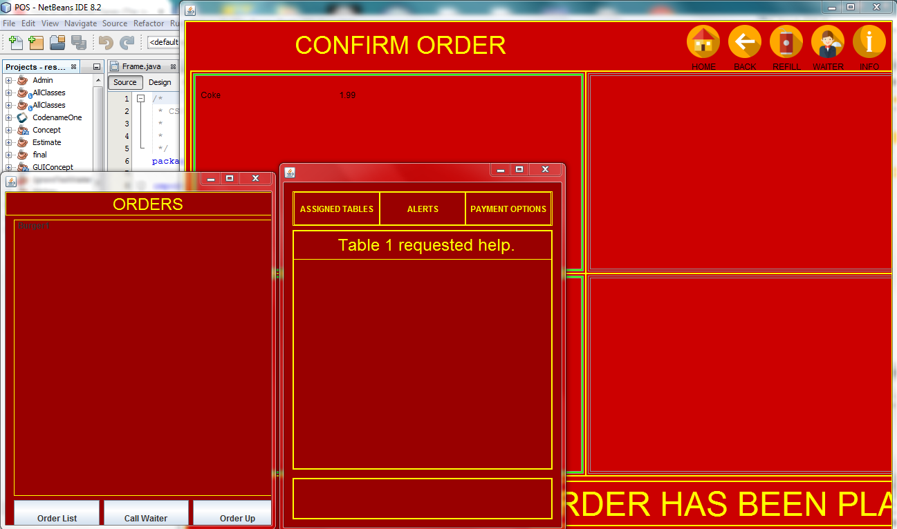
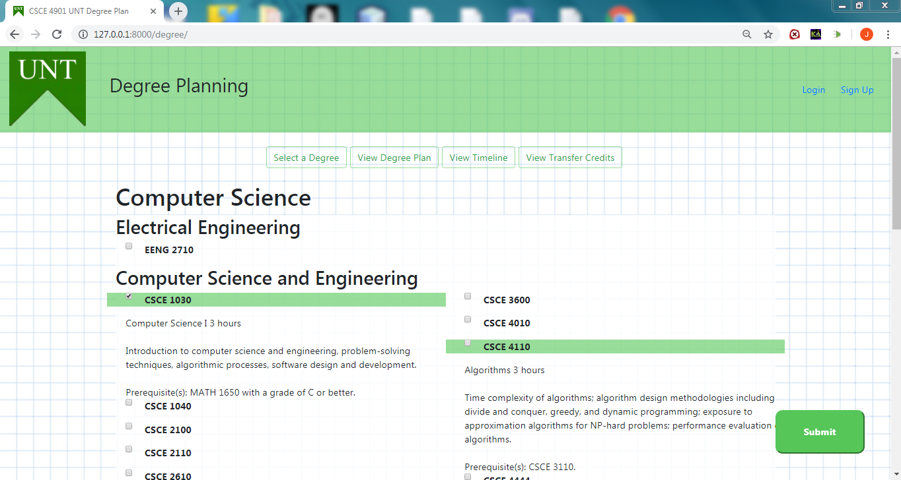

Projects
University of North Texas Projects
Restaurant App
 Project DescriptionIn this software egineering project, I and five group members were tasked with creating a set of apps to serve a fictional restaurant business. The project consists of three UI desktop applications, one for the customer, one for the kitchen, and one for the waiters, as well as a server desktop application that handles the communication between the UI applications.
My roleMy primary role in this team project was the design and implementation of the server application. Since the project involved communication between different desktop applications, I implemented a multithreaded server program using local sockets and made sure it recognized the appropriate destination for messages and data.
- Java
- Swing
Degree Planning App
 Project DescriptionThis is my senior software engineering capstone project. For this project, I and three other members worked with a professor at UNT to create a web app designed to allow students to plan out their UNT college of engineering degree. The app allowed students to view information about the classes in a degree and to view how some classes affect their path towards graduation.
My roleI was involved in different aspects of this project. I created some of the models, such as the course and transfer credit models, that became the schemas for our database. I wrote back-end code to query our PostgreSQL database adn organized the results to arrange the data before displaying it. I also wrote back-end calculations such as the code to calculate the appropriate degree timeline. Lastly, I also worked with HTML5, CSS, and JavaScript to populate some of the webpages such as the degree view page.
- Django
- Python
- HTML5
- CSS
- JavaScript
- PostgreSQL
- Jinja2
Other Projects
Survey Form
 Project Description
Project Description
A simple survey form created for the freeCodeCamp curriculum.
- HTML5
- CSS
Product Landing Page
 Project Description
Project Description
A mock product landing page created for freeCodeCamp.
- HTML5
- CSS
 Project Description
Project Description
 Project Description
Project Description